Introducción.#
En este apartado se van a explicar muchos vídeos existentes en la red que tienen una alta calidad didáctica y que por su interés se ha creído oportuno hacer una recopilación de los mismos.
Matriz de densidad y plot State City.#
Este vídeo lo podemos ver en Yutube en el siguiente enlace. Además según consta en el mismo se corresponde con una pregunta hecha en el examen de Qiskit del año 2020.
https://www.youtube.com/watch?v=p-aK3jHNUSQ
La pregunta dice lo siguiente: Considerar el siguiente circuito cuántico de tres qubits. ¿ Cuales son la partes reales e imaginarias del vector de estado resultante?.
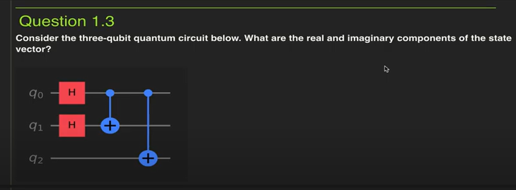
En el vídeo (minuto 0:15) se pueden ver las posibles soluciones que se proponían, que son gráficos obtenidos con plot_state_city .
Como puede verse en este esquema cuántico se tratan de dos puertas H sobre los qubits 0 y 1 seguidas de dos puertas cuánticas de tipo CNOT.
La solución manual, de este circuito cuántico se obtendría de la siguiente manera:
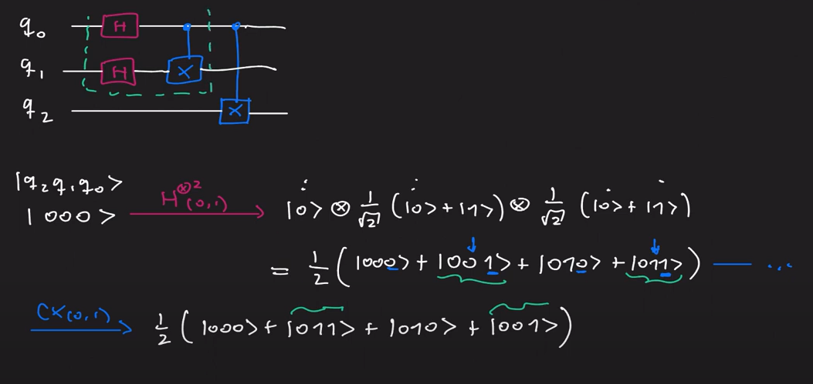
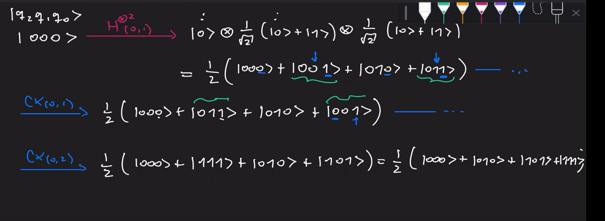
Tengamos en cuenta cómo se define la matriz de densidad (density matrix) y el plot State City, lo vemos en la siguiente figura:
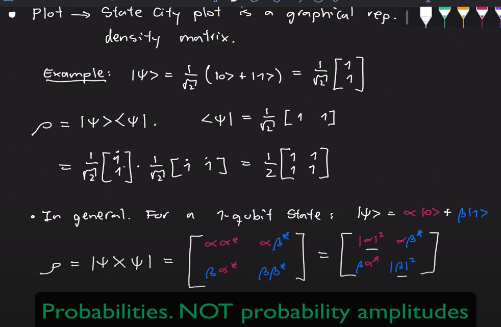
En general para n qubits
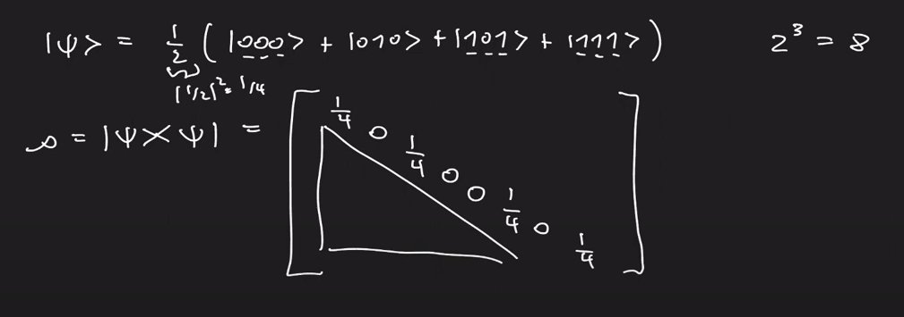
Vamos a ver ahora cómo montamos el circuito en qiskit
from qiskit import QuantumCircuit
from qiskit.quantum_info import Statevector, DensityMatrix
# 8 es una potencia de 2
psi = Statevector.from_int(0,8)
psi.draw('latex')
qc = QuantumCircuit(3)
qc.h([0,1])
qc.cx(0,1)
qc.cx(0,2)
qc.draw('mpl')
psiout = psi.evolve(qc)
psiout.draw('latex')
from qiskit.tools.visualization import plot_state_city
plot_state_city(psiout)
# También se puede sacar así
psiout.draw('city')
NOTA: El gráfico anterior (plot_state_city) se obtiene de la matriz de densidad que se saca a continuación. Como puede verse, las barras del gráfico tienen como altura los valores de esa matriz de densidad.
rhoout = DensityMatrix(psiout)
rhoout.draw('latex')
Visualizaciones (examen 2020).#
Esta es la pregunta 1.4 de un examen de qiskit del año 2020, y se encuentra en este vídeo
https://www.youtube.com/watch?v=FDudoiJ_lh8
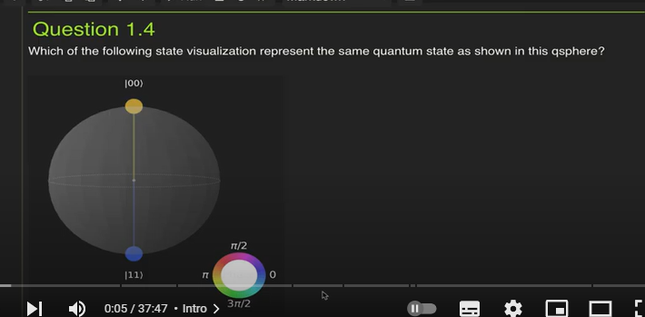
Hay cuatro posibles respuestas que se pueden ver en el vídeo. De forma práctica, se tiene que
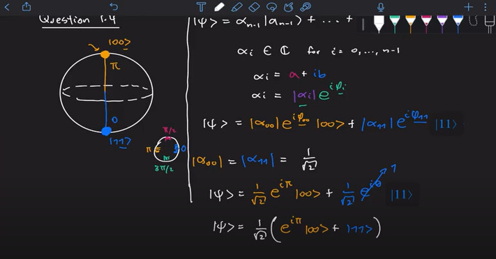
Existe la convención de que cuando se trabaja con dos cubits como es este el caso, el estado 00 se deja si el elemento de la fase, por ese motivo lo saca a factor común en la diapositiva
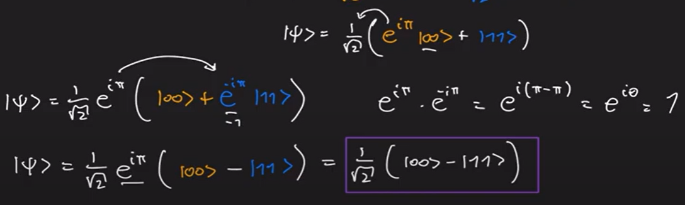
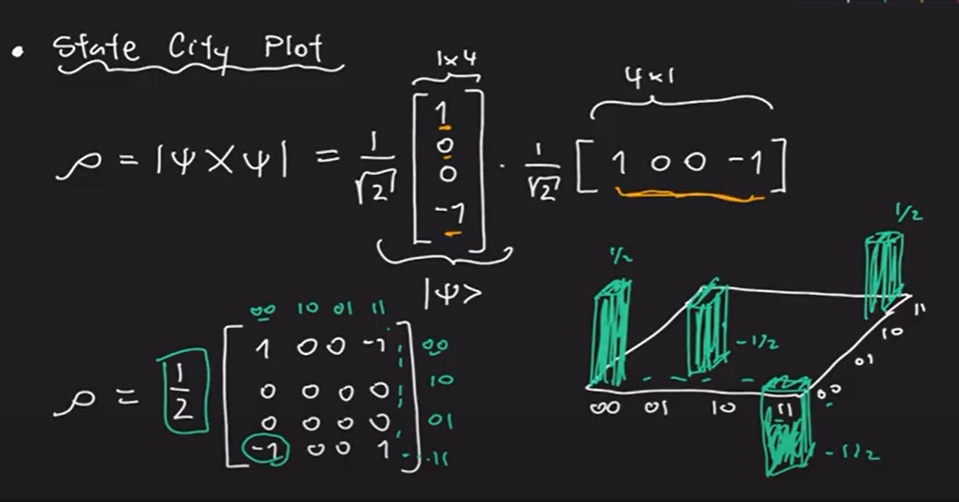
from qiskit.quantum_info import Statevector, DensityMatrix
import numpy as np
psi = 1/np.sqrt(2)*Statevector([1,0,0,-1])
psi.draw('latex')
qsphere gráfico#
psi.draw('qsphere')
Gráfico city#
psi.draw('city')
Hinton gráfico#
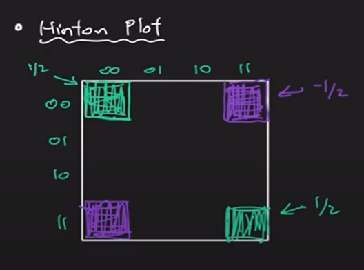
psi.draw('hinton')
También se puede utilizar plot_state_hinton .
Los valores positivos y negativos se representan con cuadrados blancos y negros, respectivamente, y el tamaño de cada cuadrado representa la magnitud de cada valor.
Gráfico Pauli vector#
Comienza poniendo un ejemplo de un sólo qubit
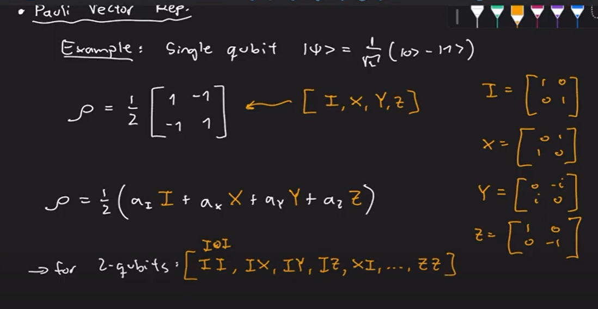
DE lo que se trata aquí es de ver cómo podemos descomponer la matriz de densidad anterior como combinación lineal de las puerta de Pauli.
Los productos que escribe para dos cubits son los productos de konecker
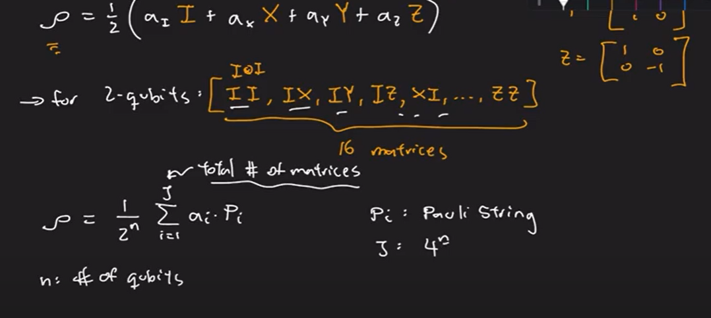

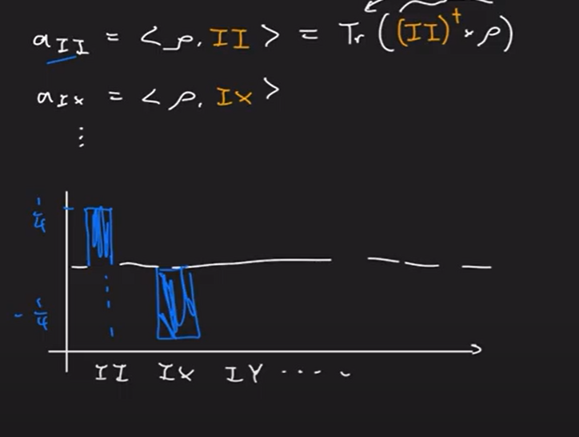
psi.draw('paulivec')
El gráfico anterior también se puede obtener con plot_state_paulivec .
Esfera de Bloch#
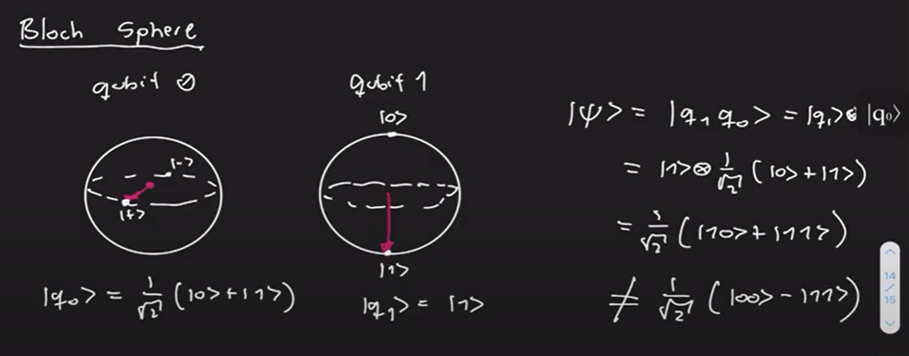
psi.draw('bloch')
No sale nonguna representación porque estamos trabajando con un qubit en estado etangled, enredado o entrelazado
Cell In[16], line 1
No sale nonguna representación porque estamos trabajando con un qubit en estado etangled, enredado o entrelazado
^
SyntaxError: invalid syntax
Diferencia puertas cuánticas.#
Esta sería la pregunta 1.5 del examen de qiskit 2022. Está en la siguiente dirección
https://www.youtube.com/watch?v=nPRDL5Dp9-g
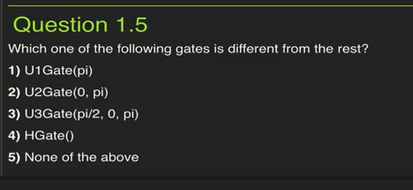
La matriz \(U_1(\lambda)\) se define como:
Entonces, se tiene lo siguiente
Por otra parte:
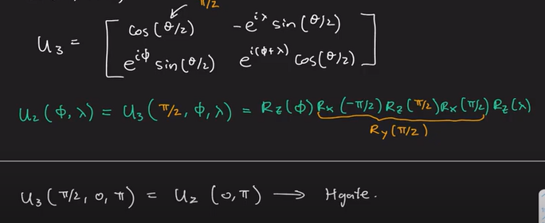
Con quiskit lo hariamos así
from qiskit import QuantumCircuit
from qiskit.quantum_info import Operator
from qiskit.tools.visualization import array_to_latex
import numpy as np
qc=QuantumCircuit(1)
qc.u1(np.pi,0)
qc.draw('mpl')
Ulop = Operator(qc)
array_to_latex(Ulop)
qc=QuantumCircuit(1)
qc.p(np.pi,0)
qc.draw('mpl')
Pop = Operator(qc)
array_to_latex(Pop)
qc=QuantumCircuit(1)
qc.u2(0,np.pi,0)
qc.draw('mpl')
U2op = Operator(qc)
array_to_latex(U2op)
qc=QuantumCircuit(1)
qc.u(np.pi/2,0,np.pi,0)
qc.draw('mpl')
Uop = Operator(qc)
array_to_latex(Uop)
Uniendo circuitos.#
Este vídeo contiene la pregunta 2.1 del examen de qiskit de 2020 y lo encontramos en la siguiente dirección.
https://www.youtube.com/watch?v=TjDGGhgRlm4
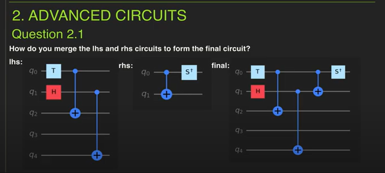
from qiskit import QuantumCircuit
lhs=QuantumCircuit(5)
lhs.t(0)
lhs.h(1)
lhs.cx(0,2)
lhs.cx(1,4)
lhs.draw('mpl')
rhs = QuantumCircuit(2)
rhs.cx(0,1)
rhs.sdg(0)
rhs.draw('mpl')
Probamos con lhs.append ( Ver este enlace
final = lhs.append(rhs)
final = lhs.copy()
final.append(rhs,[0,1])
final.draw('mpl')
final.decompose().draw('mpl')
La opción combine la encontramos en este enlace y podemos observar que está deprecated.
qc_final = lhs.combine(rhs)
La opción compose la tenemos en este enlace :
final = lhs.compose(rhs)
final.draw('mpl')
# La última opción
final = lhs+rhs
final.draw('mpl')
Además vemos que está DEPRECATED
Quantum Volume Circuitos.#
Esta es la pregunta 2.2 del examen de qiskit del 2020. el vídeo está en
https://www.youtube.com/watch?v=q2hoU8W6tRU
¡¡¡¡ Aquí lo primero que tengo que aprender es cual es quantum Volume!!! así que lo dejo pendiente
Librería Qiskit circuitos.#
Es la pregunta 2.3 del examen de qiskit de 2020, está en el siguiente vídeo.
https://www.youtube.com/watch?v=L3Pi7Hr_9yM
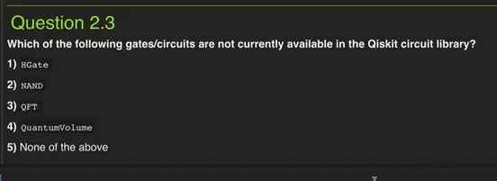
from qiskit.circuit.library import HGate, NAND, OFT, QuantumVolume
Pauli class y Operator#
Este vídeo se puede ver en
https://www.youtube.com/watch?v=XvY8i3-x-Jg
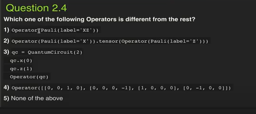
El método Pauli lo podemos encontrar en este enlace.
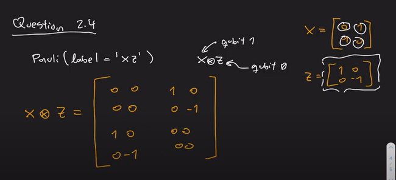
from qiskit.quantum_info import Pauli, Operator
from qiskit.tools.visualization import array_to_latex
OP1 = Operator(Pauli(label='XZ'))
array_to_latex(OP1)
# Parece que despues la instrucción va a sera asi
array_to_latex(Operator(Pauli('XZ')))
OP2 = Operator(Pauli(label='X')).tensor(Operator(Pauli(label='Z')))
array_to_latex(OP2)
from qiskit import QuantumCircuit
qc = QuantumCircuit(2)
qc.x(0)
qc.z(1)
qc.draw('mpl')
OP3 = Operator(qc)
array_to_latex(OP3)
OP4 = Operator([[0,0,1,0],[0,0,0,-1],[1,0,0,0],[0,-1,0,0]])
array_to_latex(OP4)
Transpiling circuitos & LookAhead.#
Este es el ejercicio 2.5 de la prueba de qiskit del año 2020. Se encuentra el vídeo en
https://www.youtube.com/watch?v=zqmPp7nypGc
NOTA: Como esta materia no tengo ni idea de momento lo dejo
IBM Backends.#
Esta es la pregunta 3.1 del examen de kisquit 2020 y el vídeo se puede ver en la siguiente dirección web
https://www.youtube.com/watch?v=eUyHAyA2r8s .
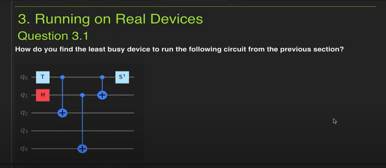
from qiskit import IBMQ
provider = IBMQ.ibmq.load_account()
from qiskit.providers.ibmq import least_busy
least_busy(provider.backends())
provider.backends()
for backend in provider.backends():
print(f'name: {backend}, numero de qubits: {backend.configuration().n_qubits}')
provider.backends(filters=lambda x:x.configuration().n_qubits >=5)
least_busy(provider.backends(filters=lambda x:x.configuration().n_qubits >=5))
provider.backends(filters=lambda x: x.configuration().n_qubits >=5
and not x.configuration().simulator and x.status().operational==True)
least_busy(provider.backends(filters=lambda x: x.configuration().n_qubits >=5
and not x.configuration().simulator and x.status().operational==True))
Devolver último job de un IBM Backend.#
Es la pregunta 3.2 de qiskit del examen de 2020. Se puede ver en este vídeo
https://www.youtube.com/watch?v=QoHcznidzeg
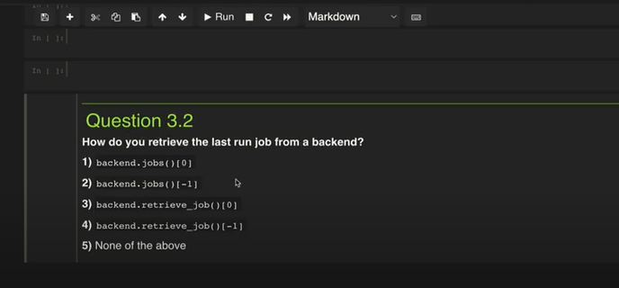
from qiskit import QuantumCircuit
qc= QuantumCircuit(1,1)
qc.h(0)
qc.measure(0,0)
qc.draw(output='mpl')
yprovider = IBMQ.ibmq.load_account()
from qiskit.providers.ibmq import least_busy
from qiskit.tools.monitor import job_monitor
backend = least_busy(provider.backends())
print(backend)
from qiskit import execute
job= execute(qc, backend=backend)
job_monitor(job)
from qiskit.tools.visualization import plot_histogram
plot_histogram(job.result().get_counts(qc))
job2 = backend.jobs()[0]
plot_histogram(job2.result().get_counts(qc))
Simulador de un Statevector..#
Este es el ejercicio 5.1 del examen de qiskit del 2020. Al principio del vídeo no se ve y por lo tanto tampoco se puede ver la pregunta en concreto que se hace. El vídeo está en el siguiente enlace.
https://www.youtube.com/watch?v=qK5qUgcLe-c
RESPUESTA
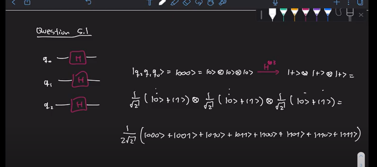
from qiskit import QuantumCircuit, execute, Aer
qc = QuantumCircuit(3)
qc.h([0,1,2])
qc.draw(output='mpl')
s_simulator = Aer.get_backend('statevector_simulator')
job = execute(qc, backend=s_simulator)
result = job.result()
v= result.get_statevector(qc)
v.draw(output='latex')
v.draw(output='text')
Statevector class.#
Esta es la pregunta 5.2 del examen de qiskit 2020. El vídeo está en
https://www.youtube.com/watch?v=fnRaMsMVIBA.
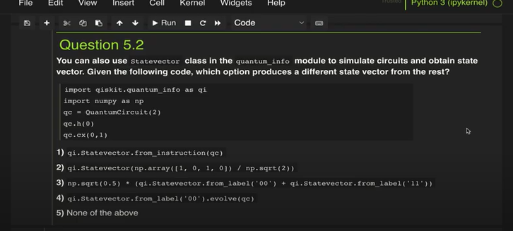
from qiskit import QuantumCircuit
import qiskit.quantum_info as qi
import numpy as np
qc = QuantumCircuit(2)
qc.h(0)
qc.cx(0,1)
qc.draw(output="mpl")
psi = qi.Statevector(qc)
psi.draw(output="latex")
qi.Statevector.from_instruction(qc).draw(output="latex")
qi.Statevector(np.array([1,0,1,0])/np.sqrt(2)).draw(output='latex')
(np.sqrt(0.5)*(qi.Statevector.from_label('00')+qi.Statevector.from_label('11'))).draw(output='latex')
qi.Statevector.from_label('00').evolve(qc).draw(output='latex')
Unitary simulator.#
Esta es la pregunta 5.3 de qikit del examen del año 2022. Esta en el vídeo siguiente
https://www.youtube.com/watch?v=6Hq5HoIMuFg.
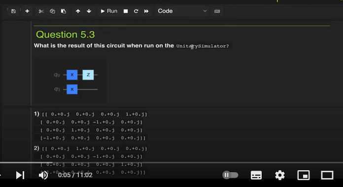
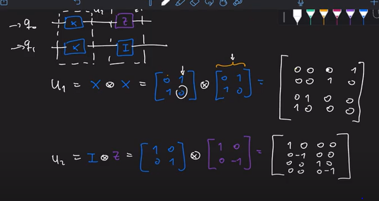
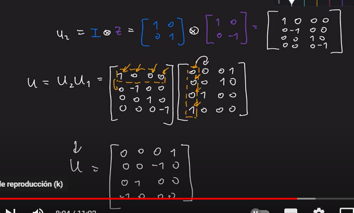
from qiskit import QuantumCircuit, execute, Aer
from qiskit.visualization import array_to_latex
qc = QuantumCircuit(2)
qc.x([0,1])
qc.z(0)
qc.draw(output='mpl')
U_simulator = Aer.get_backend("unitary_simulator")
job = execute(qc,backend=U_simulator)
result = job.result()
U = result.get_unitary()
array_to_latex(U)
Operator class#
Este se corresponde con la pregunta 5.4 del examen de qiskit del 2022, se encuentra en el siguiente vídeo:
https://www.youtube.com/watch?v=JcelyVhJpio
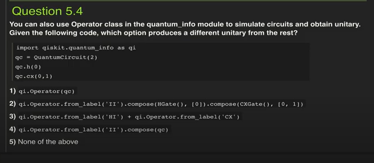
import qiskit.quantum_info as qi
from qiskit import QuantumCircuit
qc = QuantumCircuit(2)
qc.h(0)
qc.cx(0,1)
qc.draw(output='mpl')
from qiskit.visualization import array_to_latex
array_to_latex(qi.Operator(qc))
# ver https://qiskit.org/documentation/stubs/qiskit.quantum_info.Operator.from_label.html
array_to_latex(qi.Operator.from_label('II'))
compose performs matrix multiplication, not tensoring
# compose performs matrix multiplication, not tensoring
from qiskit.circuit.library import HGate
array_to_latex(qi.Operator.from_label('II').compose(HGate(),[0]))
from qiskit.circuit.library import HGate, CXGate
array_to_latex(qi.Operator.from_label('II').compose(HGate(),[0]).compose(CXGate(),[0,1]))
array_to_latex(qi.Operator.from_label('HI'))
# Me da error porque C no lo entiende
array_to_latex(qi.Operator.from_label('HI')+qi.Operator.from_label('CX'))
array_to_latex(qi.Operator.from_label('II').compose(qc))
Qasm Simulator & Aer Simulator#
Esta es la pregunta 5.5 del examen de qiskit del año 2020. Esta en este vídeo
https://www.youtube.com/watch?v=twh96Tt2s7Y <\a>
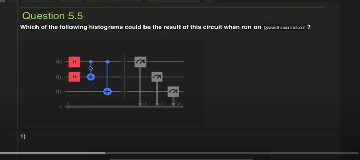
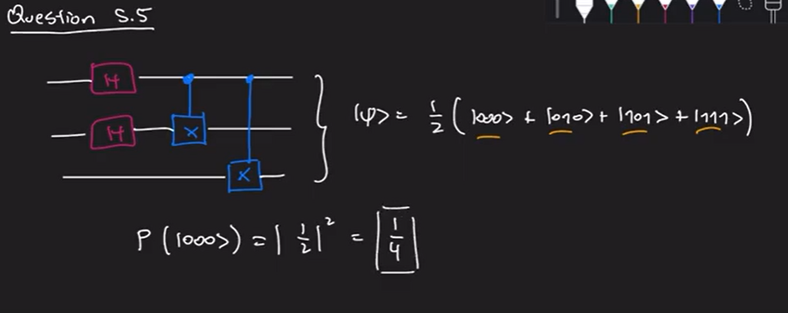
from qiskit import QuantumCircuit, execute, Aer
from qiskit.visualization import plot_histogram
# Construimos el circuito
qc = QuantumCircuit(3,3)
qc.h([0,1])
qc.cx(0,1)
qc.cx(0,2)
qc.barrier()
qc.measure([0,1,2],[0,1,2])
qc.draw(output='mpl')
q_simulator = Aer.get_backend('qasm_simulator')
job = execute(qc,backend=q_simulator)
result = job.result()
counts = result.get_counts()
plot_histogram(counts)
simulator = Aer.get_backend('aer_simulator')
#job = execute(qc,backend=simulator)
# También puede ser
#job = simulator.run(qc)
# o también
job = execute(qc,backend=simulator, shots=1000)
result = job.result()
counts = result.get_counts()
plot_histogram(counts)
Extraer todas simulaciones usando “Memory”#
Este es el ejercicio 5.6 del examen de qiskit del año 2020. se puede ver en
https://www.youtube.com/watch?v=4shmIjq0IAo

from qiskit import QuantumCircuit
qc = QuantumCircuit(2)
qc.h([0,1])
qc.measure_all()
qc.draw(output='mpl')
from qiskit.providers.aer import StatevectorSimulator
from qiskit import execute
#result = execute(*what goes in here?*).result()
result = execute(qc, StatevectorSimulator(),shots=15, memory=True).result()
memory = result.get_memory(qc)
print(memory)
from qiskit.providers.aer import QasmSimulator
#execute(qc, QasmSimulator(),shots=15, memory=True)
result = execute(qc, QasmSimulator(),shots=15, memory=True).result()
memory = result.get_memory(qc)
print(memory)
# Lo mismo que antes pero poniendo memory=False
result = execute(qc, QasmSimulator(),shots=15, memory=False).result()
memory = result.get_memory(qc)
print(memory)
No es una puerta Clifford.#
Este es el ejercicio 5.7 del examen de qiskit del 2020 Esta en este vídeo.
https://www.youtube.com/watch?v=L9vQuJPl_zQ
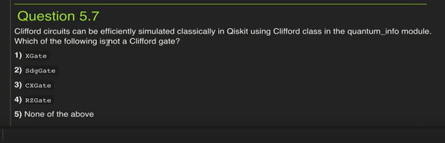
La documentación de la clase Clifford se puede ver en https://qiskit.org/documentation/stable/0.19/stubs/qiskit.quantum_info.Clifford.html
Ahí se puede leer lo siguiente:
Clifford operators can be initialized from circuits containing only the following Clifford gates: IGate, XGate, YGate, ZGate, HGate, SGate, SdgGate, CXGate, CZGate, SwapGate. They can be converted back into a QuantumCircuit, or Gate object using the to_circuit() or to_instruction() methods respectively. Note that this decomposition is not necessarily optimal in terms of number of gates.